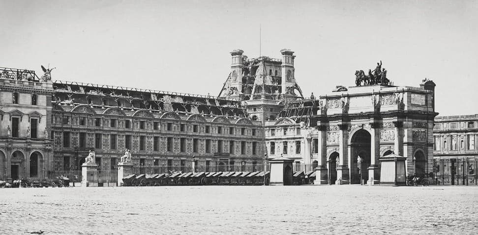
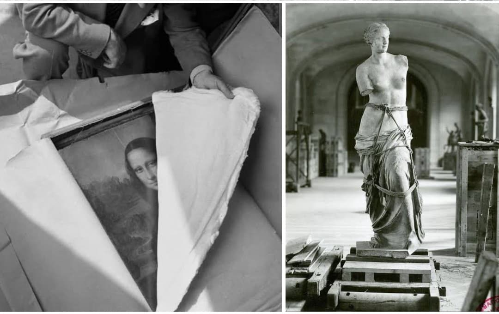
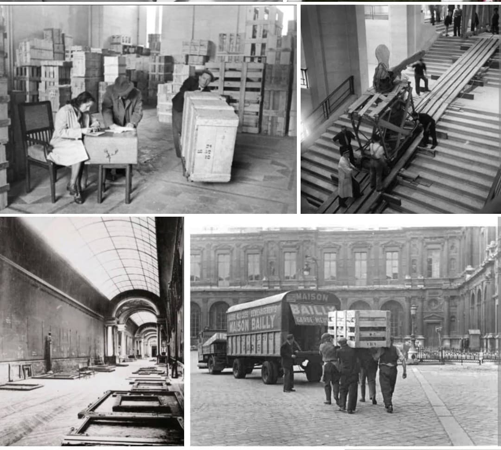

L'évacuation clandestine et l'exode des trésors nationaux face à la menace nazie

À la veille du déclenchement de la Seconde Guerre mondiale, le plus grand musée du monde s'est retrouvé face à un défi colossal : protéger des milliers de chefs-d'œuvre inestimables contre les bombardements aériens et les velléités de pillage du régime nazi.
Sous la direction visionnaire de **Jacques Jaujard**, le Louvre est intégralement vidé en quelques jours. Un exode sans précédent commence alors à travers la France pour mettre à l'abri *La Joconde*, la *Vénus de Milo*, la *Victoire de Samothrace* et des milliers d'autres trésors nationaux.
Dès 1938, tirant les leçons de la guerre civile espagnole et de la destruction des œuvres d'art à Madrid, le directeur des Musées nationaux, **Jacques Jaujard**, élabore dans le plus grand secret un plan d'urgence d'une précision chirurgicale.
Le 25 août 1939, quelques jours avant l'invasion de la Pologne, le musée ferme officiellement ses portes sous prétexte de « travaux ». En moins de trois jours, conservateurs, gardiens et étudiants de l'École du Louvre emballent près de 4 000 œuvres dans des centaines de caisses en bois. Un code de pastilles de couleur indique leur valeur prioritaire (le rouge pour les chefs-d'œuvre inestimables).
Des convois d'ambulances, de camions civils et de wagons s'élancent sur les routes de France pour acheminer les pièces vers des dépôts secrets : le **Château de Chambord**, le **Château de Valençay**, l'abbaye de Loc-Dieu ou encore le château de Montal.
*La Joconde* de Léonard de Vinci voyage dans un caisson isotherme doublé de velours, transporté à bord d'une ambulance blindée. Durant tout le conflit, la célèbre peinture changera de refuge à **neuf reprises** pour échapper à l'avancée des troupes allemandes et aux risques de saisie.

Lorsque les troupes allemandes investissent Paris en juin 1940, les officiers de la *Kunstschutz* (protection des œuvres d'art) découvrent un palais désert : il ne reste que des cadres vides et des moulages en plâtre. Malgré les pressions du maréchal Hermann Göring pour récupérer les chefs-d'œuvre, Jaujard multiplie les prétextes administratifs pour refuser le rapatriement des pièces à Paris.
Pendant ce temps, au **Musée du Jeu de Paume**, les nazis entreposent les collections privées confisquées aux familles juives. La résistante **Rose Valland**, discrètement maintenue à son poste, dresse en secret l'inventaire précis des milliers d'œuvres volées et de leurs destinations en Allemagne, permettant leur localisation et leur restitution dès la fin de la guerre.

À la Libération en 1945, le bilan est exceptionnel : grâce à la coordination de la Résistance, du personnel des musées et des réseaux de transport, **aucun chef-d'œuvre majeur du Louvre n'a été détruit ni volé** par les forces d'Occupation.
Dès 1946, les convois effectuent le trajet inverse et les œuvres réintègrent progressivement leurs salles d'origine. L'opération reste considérée aujourd'hui comme le plus grand sauvetage du patrimoine artistique de l'histoire moderne.
Page du Musée HOP WW2 – Section Mémoire & Symboles Militaires